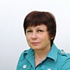

Дошкольное отделение школы № 1317
В 2015 году 29% первоклассников Школы № 1317 пришли из дошкольного отделения.
- улица Академика Анохина, 4к6
Воспитатели
Воспитатели, которых чаще всего благодарят родители (отзывы и профили сотрудников взяты с официального сайта школы):|
Воспитатель
Столярова Марина Ивановна
17 благодарностей |
Воспитатель
Савкина Светлана Васильевна
13 благодарностей |
Воспитатель
Янова Галина Игоревна
11 благодарностей |
Логопед
Ларина Елена Викторовна
7 благодарностей |
|
Старший воспитатель
Фалынскова Людмила Васильевна
6 благодарностей |
Воспитатель
Половникова Светлана Николаевна
6 благодарностей |
 Воспитатель
Емельянова Диана Шарифулаевна
Воспитатель
Емельянова Диана Шарифулаевна
4 благодарности |
Муз. рук.
Солдатова Наталья Валентиновна
4 благодарности |
|
Воспитатель
Фалынскова Анастасия Владимировна
4 благодарности |
Воспитатель
Борисова Татьяна Викторовна
3 благодарности |
 Свирчевская Оксана Васильевна
Свирчевская Оксана Васильевна
2 благодарности |
Физ. рук.
Король Алина Александровна
2 благодарности |
|
Воспитатель
Масленникова Елена Вячеславовна
2 благодарности |

Воспитатель
Ковалева Наталья Петровна
2 благодарности |
Воспитатель
Свириденко Ольга Ивановна
2 благодарности |
Воспитатель
Бирчикова Валентина Ивановна
2 благодарности |
Отзывы
Данные собраны c официального сайта школы и через форму для отзывов.
Добрый день! Я представитель родительского комитета группы N 9, хочу выразить благодарность музыкальному руководителю Солдатовой Наталье Валентиновне. Все детские утренники проходят на большом энтузиазме и видно, что для детей это настоящий праздник! Вклад Наталье Валентиновне не оценим!!! Дети с большим удовольствием идут на музыкальные занятия, учат стихи, поют песни, танцуют. Отдельно хочется отметить программу выпускного в нашей группе, это был незабываемый праздник для всех детей и родителей. Спасибо вам огромное!!!
Мой ребенок в 2015-2016 уч.году посещал кружок по изодеятельности, в котором преподавала Столярова М.И..Хочу сказать ей огромное спасибо за то, что смогла найти подход к моему сыну, привить ему интерес к рисованию. На занятиях Марина Ивановна использовала разную технику рисования, работы детей получились очень интересные и разнообразные. Сынуля с гордостью демонстрирует нам свое творчество. Спасибо за внимание и заботу, с которой Марина Ивановна подходит к своей работе!!!
Вот и еще один год пролетел, наши дети повзрослели. Мой сын Руслан Джалилов посещает 12-ю группу. Всегда с радостью и удовольствием, потому что в группе сложился хороший микроклимат, там интересно и весело. Спасибо замечательному педагогу Столяровой Марине Ивановне. Она вкладывает всю душу в наших детей. С сожалением констатирую, что мы, родители, в водовороте дел и хлопот в лучшем случае успеваем почитать на ночь ребенку книгу, и то не всегда. Поэтому большую часть своего багажа знаний и навыков ребенок получает в детском саду.Я вижу по своему ребенку, как изменилась его речь, сколько нового и интересного он приносит из детского сада и рассказывает нам. Не давно он рассказал нам не только о Юрии Гагарине, но и о Валентине Терешковой и даже Циолковском!
У меня трое детей, и все посещали данный детский сад. И ВСЕГДА на высшем уровне подготовка к школе и забота о детях. Людмила Васильевна, это Ваша заслуга и персонала, работающего под Вашим руководством! От всей души спасибо!
У меня трое детей, и все посещали данный детский сад. И ВСЕГДА на высшем уровне подготовка к школе и забота о детях. Людмила Васильевна, это Ваша заслуга и персонала, работающего под Вашим руководством! От всей души спасибо!
Выражаю огромную благодарность воспитателям 2-ой группы Татьяне Викторовне и Валентине Ивановне, а также няне Анне Сергеевне за их любовь и ежедневную заботу о наших детях. Отдельно хочется поблагодарить Заведующую Фалынскову Людмилу Васильевну за подбор сотрудников, за ее полную отдачу своему делу, за терпение и деликатность. Я в восторге от нашего сада, особенно после дня открытых дверей, где присутствовала на занятиях по рисованию в группе (проводила наша любимая Борисова Т.В.), по физкультуре и "послушный язычок". Очень интересно, насыщенно, профессионально, а главное, - с любовью к детям. По многочисленным просьбам родителей преподаватель по бассейну разрешила поприсутствовать на своем уроке. Хочу отдельно поблагодарить Алину Александровну за восторг детей в бассейне, за такие интересные и насыщенные занятия, прогресс в навыках плавания просто потрясает. Я отказалась от мысли водить ребенка в бассейн и брать уроки по плаванию вне сада, так как интереснее, веселее и результативнее, чем это делает Алина Александровна, вряд ли возможно.
Большое спасибо всем сотрудникам за радость, с которой моя дочь идет по утрам в сад!!!
Большое спасибо всем сотрудникам за радость, с которой моя дочь идет по утрам в сад!!!
Благодарю воспитателей группы 9 Наталью Петровну и Ольгу Ивановну за Ваше терпение, заботу, огромный труд, любовь к детям! В группе всегда интересно, много занятий, игр, ребенок не хочет уходить!
Спасибо музыкальному руководителю Наталье Валентиновне за подготовку праздников, всегда с удовольствием приходим на все мероприятия в саду, после них отличное настроение надолго)
Спасибо музыкальному руководителю Наталье Валентиновне за подготовку праздников, всегда с удовольствием приходим на все мероприятия в саду, после них отличное настроение надолго)
Благодарю воспитателя 1 группы Емельянову Диану Шарифулаевну за доброту, понимание, мягкий подход ко всем детям! Адаптация прошла быстро, дочь с радостью идет в сад, а это самое главное! Все праздники в группе увлекательны, дети в восторге, занятия интересные, многому научились за полгода! Спасибо Вам!
Спасибо логопеду Лариной Елене Викторовне за занятия с моим сыном Артемом Пушкиным! За этот год у него огромный прогресс в правильном произношении звуков, все благодаря Елене Викторовне! Сыну занятия нравятся, выполняет все задания с удовольствием, старается! Рада, что попали к Вам перед школой!
Здравствуйте!
Хочется самыми теплыми словами выразить благодарность за атмосферу, созданную в нашем детском садике! Моему сыну Рассулову Илье и другим деткам, которые ходят в 5 группу-очень, очень, очень повезло! Они попали к замечательному педагогу Светлане Николаевне и её прекрасной помощнице Любови Георгиевне! Их внимание, забота, любовь, чуткость с самого первого дня окружают моего сыночка. С большим удовольствием он каждое утро бежит в садик. Очень огорчается, когда наступают выходные дни. Стал более организован, заметно развились речь и моторика. Это заслуга любимой воспитательницы, ПРОФЕССИОНАЛА- Светланы Николаевны, которая каждое занятие (лепят они, рисуют, или делают что-то ещё) проводит на самом высоком уровне, интересно, познавательно, увлекательно, подходя к каждому ребёнку индивидуально! А какие удивительные праздники проходят в нашей группе!
Спасибо! Низкий поклон за счастливое, весёлое, волшебное детство моего ребёнка.
Хочется самыми теплыми словами выразить благодарность за атмосферу, созданную в нашем детском садике! Моему сыну Рассулову Илье и другим деткам, которые ходят в 5 группу-очень, очень, очень повезло! Они попали к замечательному педагогу Светлане Николаевне и её прекрасной помощнице Любови Георгиевне! Их внимание, забота, любовь, чуткость с самого первого дня окружают моего сыночка. С большим удовольствием он каждое утро бежит в садик. Очень огорчается, когда наступают выходные дни. Стал более организован, заметно развились речь и моторика. Это заслуга любимой воспитательницы, ПРОФЕССИОНАЛА- Светланы Николаевны, которая каждое занятие (лепят они, рисуют, или делают что-то ещё) проводит на самом высоком уровне, интересно, познавательно, увлекательно, подходя к каждому ребёнку индивидуально! А какие удивительные праздники проходят в нашей группе!
Спасибо! Низкий поклон за счастливое, весёлое, волшебное детство моего ребёнка.
Хочу оставить свой отзыв о наших замечательных воспитателях 6 группы Светлане Васильевне и Галине Игоревне! Посетила открытый урок по математике и , в очередной раз, убедилась в их профессионализме и чутком отношении к детям! Урок прошел просто на одном дыхании, дети были увлечены выполнением заданий,а родители удивлялись тому, как много уже знают и умеют наши детки! Таких воспитателей больше нет! Они наши! СПАСИБО ВАМ ОГРОМНОЕ!
Вложенный файл
Вложенный файл
Хочу поблагодарить коллектив группы кратковременного пребывания - Оксану Васильевну и Светлану Геннадьевну! Спасибо за ваше терпение, доброту и заботу к детям и особенно к их мамочкам, ведь в ГКП адаптация нужна не только детям, но и родителям :) Благодаря вам дети быстро адаптируются к условиям детского сада, учатся общаться в коллективе и развиваются творчески! Мой сын Рома Малышев всегда идет к вам с удовольствием, а значит чувствует вашу тепло и заботу, потому что такие маленькие детки любят только тех, кто к ним хорошо относится! Спасибо Вам большое!
"У нас самый лучший воспитатель" сказала мне дочка 5 лет ; и действительно она часто говорит про нашу воспитательницу Детского сада группы 7 Анастасию Владимировну с особой любовью и теплотой! Дочка любит её и радуется встрече с ней! Спасибо Вам , Анастасия Владимировна, за ваш труд и заботу; нам очень повезло с вами)))
Очень хочется сказать то всей души огромное спасибо воспитателям группы номер 7 Елене Евгеньевне , Елене Вячеславовне и нянечке за их труд, любовь к детям, за их терпение. Наш ребенок ходит с удовольствием в сад, даже вечером домой не хочет уходить. Еще большое спасибо логопеду Ольге Михайловне, у нас реально наметился прогресс. Большое спасибо всем...
Если вы нашли ошибку или неточность, пожалуйста, сообщите нам об этом.
Ученик, выпускник или родитель? Оставьте отзыв о детском саде.